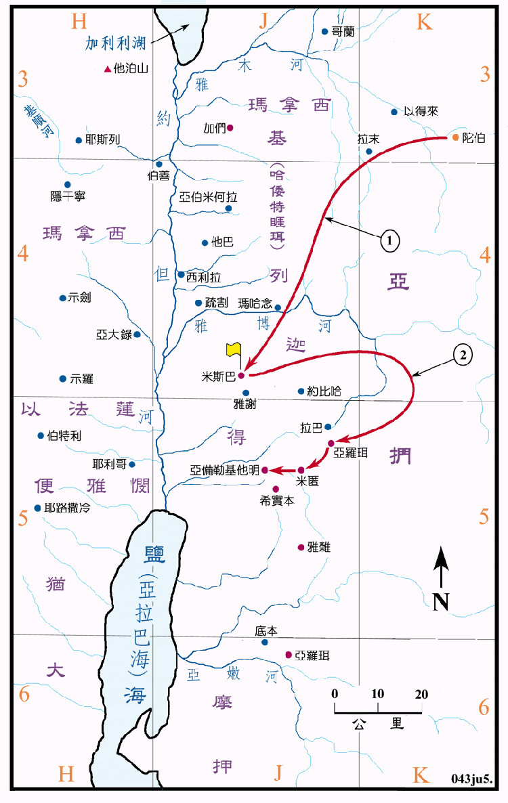

睚珥 (1119～1096BC)
耶弗他 (1078～1072BC)

行动线说明
| 序号 | 圣经 | 说明 |
|---|---|---|
| 士10:4-5 | 基列人睚珥作以色列人的士师廿二年。 | |
| 士10:6-12:7 | 亚扪人欺压基列地的以色列人有十八年之久，以色列人安营在米斯巴，但没有领袖。 | |
| 1 | 士11:1-11 | 以色列人去陀伯地请回耶弗他，立他作以色列人的领袖。 |
| 2 | 士11:32-33 | 以色列人攻击亚扪，亚扪人就被制服了。 |
| 士12:1-6 | 以法莲人责怪并攻打耶弗他，被耶弗他所败。 |
亚扪人是罗得从他的次女所得的儿子，由於圣经中从未述及其国土的边界，除首府拉巴之外，也没有提到其他的城邑，所以无法定出他国土的范围，他原来的领土大约是在基列地以东，以得来以南，拉巴和希实本以北的地区。但在耶弗他的时代，亚扪壮大了起来，不但压制约但河东的以色列人，而且还攻打河西的犹大、便雅悯和以法莲人，耶弗他是直接攻击亚扪的本土，使其被以色列人所制伏。